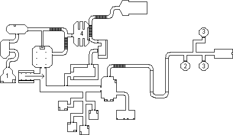

| 1. | Cell Key |
| 2. | Ghim Hammond, gives you the Key to Snergle's Chambers which is needed in Castle Ironfist in the Snergle's Caverns. The door is locked and requires cell key from #1. |
| 3. | Those cell doors open once you open the door at #2. |
| 4. | Room with about 15 spell books. |
Leave us a message at: mgrounds@hotmail.com